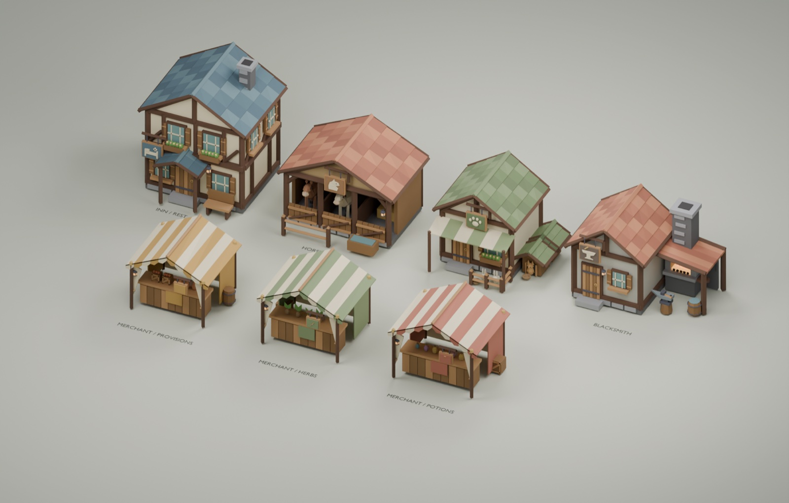
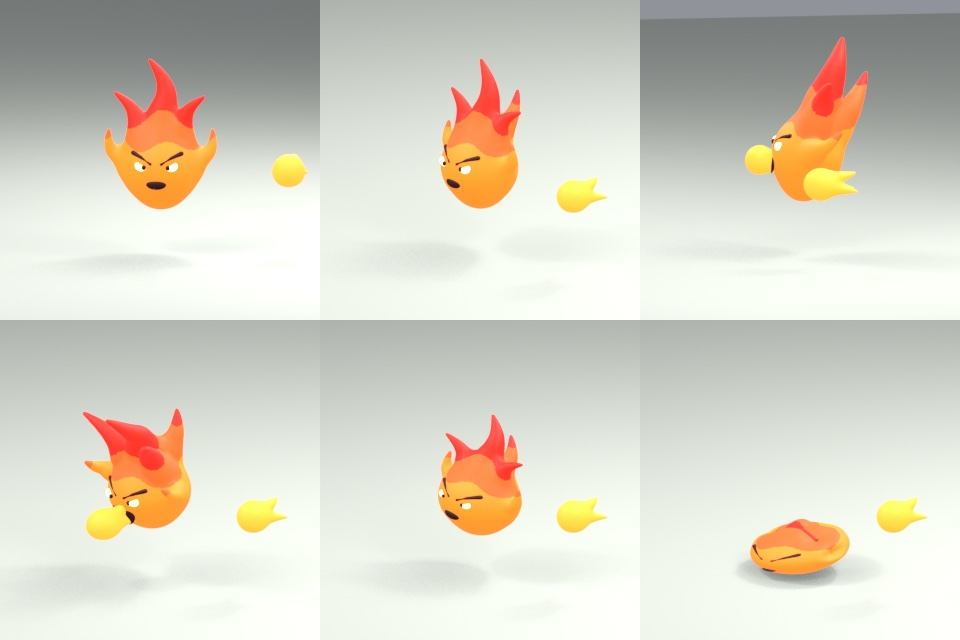

Models made by code
Modelle, die Code baut
The houses, trees, swords and monsters are 3D models. Usually, an artist builds them by hand in a 3D program, pulling points around with the mouse.
Die Häuser, Bäume, Schwerter und Monster sind 3D-Modelle. Normalerweise baut eine Künstlerin sie von Hand in einem 3D-Programm und zieht dabei Punkte mit der Maus herum.
In The Glass Bird, they are built by code. In the blender/ folder there is a Python script for each one: snake.py, octonaut.py, town.py... Running a script in Blender (a free 3D program) builds the model, its skeleton and its animations, takes preview pictures, and saves everything into assets/ for the game.
Im Glasvogel werden sie von Code gebaut. Im Ordner blender/ gibt es für jedes ein Python-Skript: snake.py, octonaut.py, town.py... Ein Skript in Blender (einem kostenlosen 3D-Programm) auszuführen baut das Modell, sein Skelett und seine Animationen, macht Vorschaubilder und speichert alles für das Spiel in assets/.
The snake started as a sketch on a whiteboard. Then it was described in words, turned into code, looked at, and improved, again and again.
Die Schlange fing als Skizze auf einem Whiteboard an. Dann wurde sie in Worten beschrieben, in Code verwandelt, angeschaut und verbessert, immer wieder.

Try it: digital clay
Probier es: digitale Knete
The monsters are made like clay figures: a body, a head, some legs, and they melt together where they meet. Drag the blobs and change how much they melt.
Die Monster werden gemacht wie Knetfiguren: ein Körper, ein Kopf, ein paar Beine, und wo sie sich treffen, verschmelzen sie. Zieh die Klumpen herum und ändere, wie sehr sie verschmelzen.
The game's monster scripts do this in 3D with dozens of shapes: tubes for legs, balls for eyes, cones for flames.
Die Monster-Skripte des Spiels machen das in 3D mit Dutzenden Formen: Röhren für Beine, Kugeln für Augen, Kegel für Flammen.
Signed distance fields
Vorzeichenbehaftete Distanzfelder
How do you describe a ball with code? Not with points and triangles, but with a question: "how far is this spot from the ball's surface?"
Wie beschreibt man eine Kugel mit Code? Nicht mit Punkten und Dreiecken, sondern mit einer Frage: "Wie weit ist diese Stelle von der Oberfläche der Kugel entfernt?"
distance = (distance to the centre) - radiusAbstand = (Abstand zur Mitte) - Radius
Outside the ball the answer is positive, on the surface zero, inside negative. That's why it's called a signed distance field. Switch on "show distances" in the demo to see the rings.
Außerhalb der Kugel ist die Antwort positiv, auf der Oberfläche null, innen negativ. Darum heißt es vorzeichenbehaftetes Distanzfeld (Signed Distance Field, SDF). Schalte in der Demo "Abstände zeigen" an, um die Ringe zu sehen.
To join two shapes: take the smaller of the two distances. For melting, use a smooth minimum, which rounds off the crease where they meet.
Um zwei Formen zu verbinden: Nimm den kleineren der beiden Abstände. Zum Verschmelzen nimmt man ein weiches Minimum, das die Kante abrundet, wo sie sich treffen.
From field to triangles
Vom Feld zu Dreiecken
The graphics card wants triangles, not questions. So the script asks the question at millions of points on a 3D grid, and a program called OpenVDB builds the triangles along the "zero" surface.
Die Grafikkarte will Dreiecke, keine Fragen. Darum stellt das Skript die Frage an Millionen Punkten auf einem 3D-Gitter, und ein Programm namens OpenVDB baut die Dreiecke entlang der "Null"-Oberfläche.
Then all parts become one smooth mesh with plain colours: no pictures painted on it. That's what gives the monsters their soft, toy-like look.
Dann werden alle Teile zu einem glatten Netz mit einfachen Farben: keine aufgemalten Bilder. Das gibt den Monstern ihr weiches, spielzeugartiges Aussehen.

Bones and animations
Knochen und Animationen
To move, a model needs a skeleton: invisible bones inside it. Every corner of the mesh is glued to one or more bones, a bit like skin. Move the bone, and the skin follows.
Um sich zu bewegen, braucht ein Modell ein Skelett: unsichtbare Knochen darin. Jede Ecke des Netzes klebt an einem oder mehreren Knochen, ein bisschen wie Haut. Beweg den Knochen, und die Haut folgt.
The scripts compute every pose with math, and save it as keyframes, 30 per second. A few short clips per monster: walk, attack, death.
Die Skripte berechnen jede Pose mit Mathe und speichern sie als Schlüsselbilder (Keyframes), 30 pro Sekunde. Ein paar kurze Clips pro Monster: laufen, angreifen, sterben.
The snake's walk is clever: a wave runs backwards along its body at exactly its walking speed. So its body slides along a path that stays still on the floor, like a real snake!
Der Lauf der Schlange ist schlau: Eine Welle läuft genau mit ihrem Lauftempo rückwärts den Körper entlang. So gleitet ihr Körper einen Weg entlang, der auf dem Boden stillsteht, wie bei einer echten Schlange!
The game and the art must agree
Spiel und Kunst müssen zusammenpassen
The snake's attack clip snaps its jaw shut on frame 12. So the game deals the bite damage at 12/30 = 0.4 seconds into the attack. If one changes without the other, the bite would hurt before (or after) the jaw closes.
Der Angriffsclip der Schlange schnappt bei Bild 12 den Kiefer zu. Darum macht das Spiel den Bissschaden nach 12/30 = 0,4 Sekunden des Angriffs. Würde sich eins ändern ohne das andere, täte der Biss weh, bevor (oder nachdem) der Kiefer zuschnappt.
That's why the game has tests that open the exported models and check that the clips, bones and hit frames are what the code expects.
Darum hat das Spiel Tests, die die exportierten Modelle öffnen und prüfen, dass Clips, Knochen und Trefferbilder so sind, wie der Code es erwartet.
In the game, the hero's clips are also blended: idle into walk into run, depending on speed, and the legs swing further when running faster than the clip.
Im Spiel werden die Clips des Helden auch gemischt: Stehen geht in Gehen über und Gehen in Rennen, je nach Tempo, und die Beine schwingen weiter aus, wenn er schneller rennt als der Clip.
Mixing walk and run Gehen und Rennen mischenTry it: same snake, new colours
Probier es: dieselbe Schlange, neue Farben
A Blood viper is the same model as a Grass snake, just recoloured. The game picks one anchor colour (the skin) and moves all related colours along with it, so the darker rib bands stay darker by the same amount. Click the kinds, or mix your own.
Eine Blutviper ist dasselbe Modell wie eine Grasnatter, nur umgefärbt. Das Spiel wählt eine Ankerfarbe (die Haut) und bewegt alle verwandten Farben mit, damit die dunkleren Rippenstreifen um genauso viel dunkler bleiben. Klick die Sorten an oder misch deine eigene.
The colours use OKLCH: Lightness, Colourfulness (chroma) and Hue. Unlike plain RGB, changing the hue doesn't make a colour suddenly look brighter or darker.
Die Farben benutzen OKLCH: L für Helligkeit (lightness), C für Buntheit (chroma) und H für den Farbton (hue). Anders als bei einfachem RGB sieht eine Farbe nicht plötzlich heller oder dunkler aus, wenn man den Farbton ändert.
The real code: clay in Python
Der echte Code: Knete in Python
This is Python, the language Blender speaks. np is NumPy, which does math on millions of points at once.
Das ist Python, die Sprache, die Blender spricht. np ist NumPy, das Mathe mit Millionen Punkten auf einmal macht.
_smin is the smooth minimum. h says how much each shape wins at this spot; the last part, - k * h * (1 - h), pulls the surface outwards where both are close: that's the melted fillet. The demo two slides back uses this exact formula.
_smin ist das weiche Minimum. h sagt, wie sehr jede Form an dieser Stelle gewinnt; der letzte Teil, - k * h * (1 - h), zieht die Oberfläche nach außen, wo beide nah sind: Das ist die verschmolzene Rundung. Die Demo zwei Folien vorher benutzt genau diese Formel.
ellipsoid is the distance to an egg shape (IQ is Inigo Quilez, who shares lots of these formulas online).
ellipsoid ist der Abstand zu einer Eiform (IQ ist Inigo Quilez, der viele solche Formeln im Internet teilt).
A monster is a long list of shapes like this, joined with _smin.
Ein Monster ist eine lange Liste solcher Formen, verbunden mit _smin.